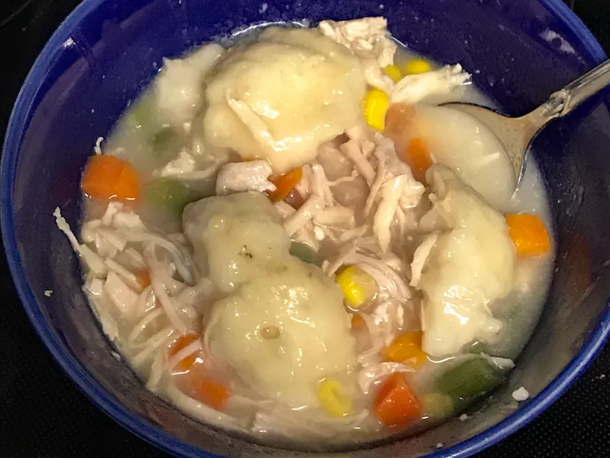

Dumplings

Description
This is a great canned chicken and dumplings recipe for Southern-style chicken and dumplings. My husband doesn't usually like chicken and dumplings, but he absolutely loved these and asked for seconds (which he never does with anything). My little boys (2, 4, and 5 years) also ate it up and asked for more. I just threw this together on a night I didn't feel like spending much time and energy on cooking. This is great and easy for the kids to help with, too.
Ingredients
- 2 ¼ cups biscuit baking mix
- ⅔ cup milk
- 2 (14 ounce) cans chicken broth
- 2 (10 ounce) cans chunk chicken, drained
Steps
- Stir together biscuit mix and milk in a medium bowl until dough comes together; set aside.
- Pour cans of chicken broth into a saucepan along with chicken; bring to a boil.
- Take a handful of biscuit dough and flatten it in your hand. Tear off 1- to 2-inch pieces and drop them into boiling broth. Make sure they are fully immersed, at least for a moment. Repeat this step with remaining biscuit dough, then carefully stir soup, so dumplings are covered by broth.
- Cover and simmer, stirring occasionally, over medium heat until dumplings are cooked through, about 10 minutes.